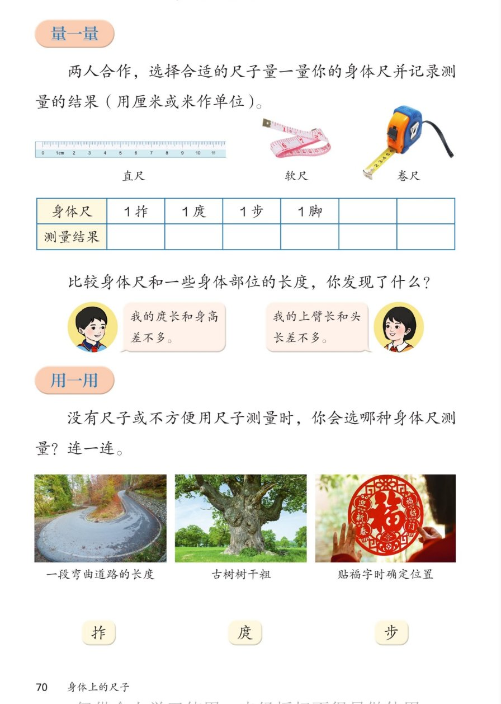

🔊 综合与实践 · 身体上的尺子 · 课本第 70 页 · 量一量与用一用
人教版《数学》二年级上册 · 有声图文带读 · 先想后看解析 · 选尺子量身体尺 · 连一连
题数
6
认知
2
强化
3
拓展
1
本页重点
直尺软尺卷尺 · 庹长≈身高 · 弯路用步量
🎧 分两步学：
① 解析教材图片
——纯声音读图，读到哪一块哪一块闪动提示；关键处先倒计时让你思考，再在图片下方给出解析并朗读。
② 分层提问练习
——六道分层题（认知 / 强化 / 拓展），先思考再展开解析、朗读参考答案；这一步不再回到图片。
也可以随时点任意一句话、图上任意一块单独听；点课本文字卡还会展开答案。
教材图片（点块听读，读到哪块哪块闪）

📖 人教版《数学》二年级上册 · 课本第 70 页 · 图片仅供个人学习，版权归人民教育出版社所有
🤔 想一想（点我可跳过）
课本的文字（点句子：听读 + 看答案）
选尺子
直尺 · 软尺 · 卷尺怎么选？
看答案 ▾
直尺
：短而硬，量 1 拃、1 脚正好；
软尺
：软软的，能围一圈，量头围、腰围用它；
卷尺
：能拉很长，量 1 庹、1 步、房间都方便。
记录表
身体尺测量记录表
看答案 ▾
要量的身体尺：
1 拃、1 庹、1 步、1 脚
；
单位用
厘米或米
：短的身体尺用厘米，长的用米；
示例：1 拃约 15 厘米，1 庹约 1 米 30 厘米（以实测为准）。
小发现
庹长≈身高 · 上臂长≈头长
看答案 ▾
庹长和身高差不多
——知道身高就知道庹长；
上臂长和头长差不多
；
💡 这些小秘密画画、估测时都用得上
连一连
连一连答案
看答案 ▾
一段
弯曲道路
的长度 →
步
（用脚走过去数步数）；
古树树干粗
→
庹
（两臂抱住树干）；
贴福字确定位置
→
拃
（离墙边几拃，小距离比一比）。
分层提问练习（先想后看解析）
📐
认知
课本介绍了哪三种尺子？
看解析
🤔 想一想
解析：
三种：
直尺、软尺、卷尺
；
量身体尺时挑最顺手的那一种。
📋
认知
身体尺记录表里要量哪四种身体尺？
看解析
🤔 想一想
解析：
四种：
1拃、1庹、1步、1脚
；
单位用
厘米或米
，结果填进表格。
🔗
强化
用一用连一连：弯曲道路、古树树干粗、贴福字，各用什么身体尺？
看解析
🤔 想一想
解析：
弯曲道路 →
步
：跟着路走，数步数；
古树树干粗 →
庹
：两臂抱树，几庹就几抱；
贴福字 →
拃
：离边几拃，比一比就贴正。
🤔
强化
为什么量弯曲道路的长度要用步？
看解析
🤔 想一想
解析：
路是
弯的
，尺子拉不直，量不准；
脚可以
顺着弯路走
，一步一步数，多弯都能量。
💡
强化
"庹长和身高差不多"这个发现有什么用？
看解析
🤔 想一想
解析：
知道身高，就能
估出自己的庹长
；
张开手臂就能
估长度
：比如门高比庹长高一点；
💡 上臂长≈头长，画画定比例用得上
🌈
拓展
生活中还有哪些地方会用到身体尺？
看解析
🤔 想一想
解析：
买布量衣：
拃和庹
；
看房间、院子多大：
步
走一走；
🌈 身体尺随时随地都能派上用场
① 解析教材图片
② 分层提问练习
⏹ 停止
纯声音 + 高亮跟随 · 想好才出解析
← 返回导航